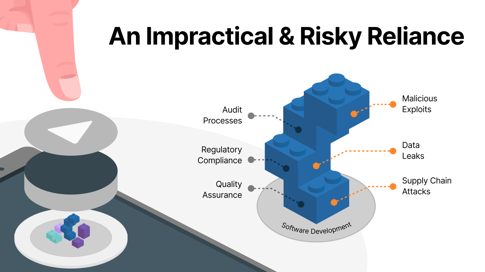
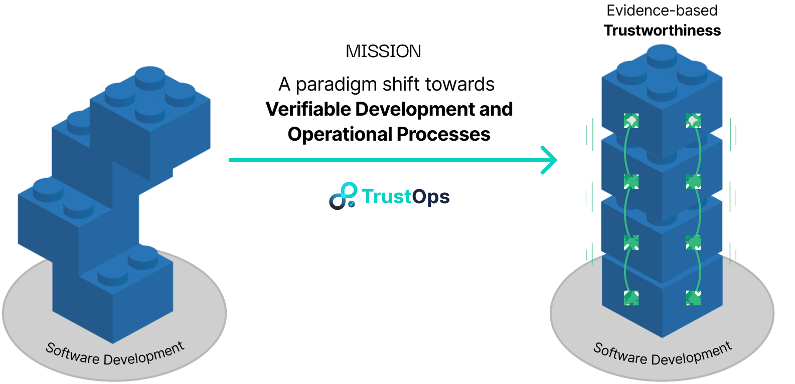

TrustOps is a research-driven framework that brings cryptographic verifiability, transparency, and integrity to the software lifecycle. It enables automated collection of tamper-proof evidence across development and operations, using trusted hardware and advanced cryptography. TrustOps supports trustworthy CI pipelines, policy-compliant releases, and verifiable SLA monitoring, helping regulated industries build and prove software trustworthiness.
Software is increasingly involved in critical infrastructure, finance, and digital public services. Yet, most systems rely on implicit trust in the development and deployment process. This creates significant risk — from unverified updates and insider threats to auditability and compliance failures. Current DevSecOps practices improve security, but often lack verifiability, transparency, and trust automation.

The global cybersecurity market is projected to exceed $500B by 2030, with growing demand for transparency and accountability in digital systems. Meanwhile, the DevOps market is expected to reach over $50B by 2030, as organizations automate and scale their infrastructure. TrustOps sits at this intersection, addressing the unmet need for continuous, cryptographically verifiable trust in the software lifecycle.

For inquiries or collaboration, reach us at info@trustops.eu